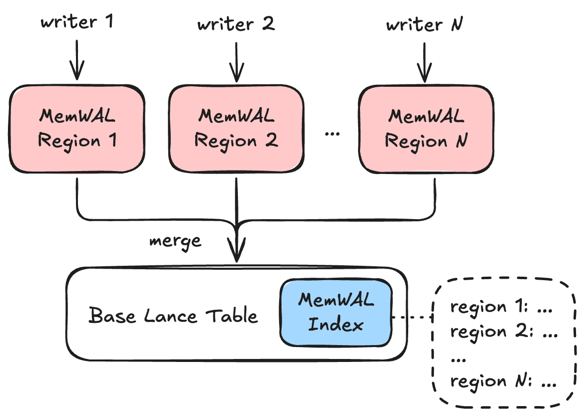
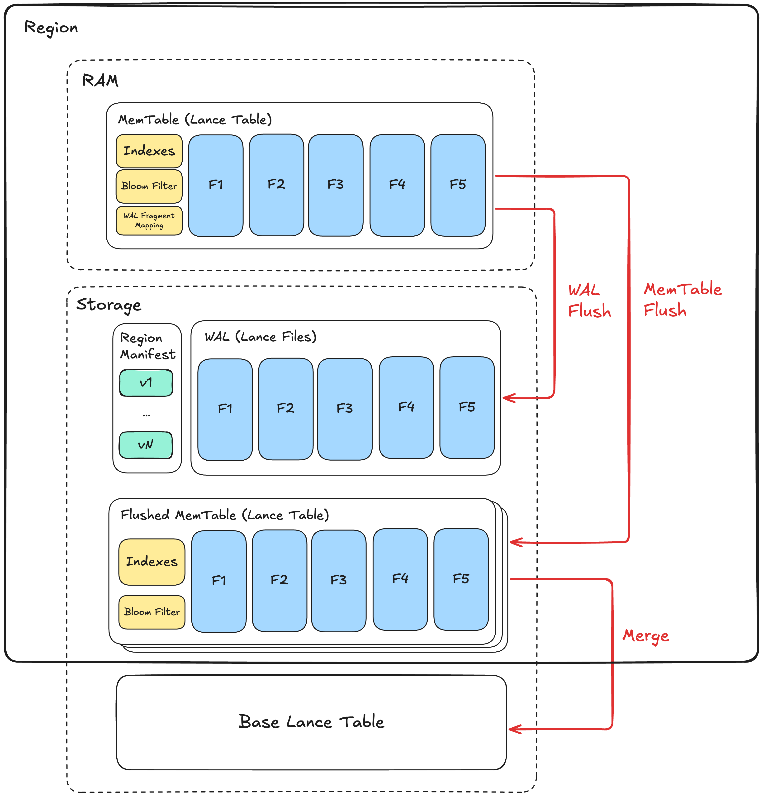

MemTable & WAL Specification (Experimental)¶
Lance MemTable & WAL (MemWAL) specification describes a Log-Structured-Merge (LSM) tree architecture for Lance tables, enabling high-performance streaming write workloads while maintaining indexed read performance for key workloads including scan, point lookup, vector search and full-text search.
Overall Architecture¶

A Lance table is called a base table under the context of the MemWAL spec. It must have an unenforced primary key defined in the table schema.
On top of the base table, the MemWAL spec defines a set of regions. Writers write to regions, and data in each region is merged into the base table asynchronously. An index is kept in the base table for readers to quickly discover the state of all regions at a point of time.
MemWAL Region¶
A MemWAL Region is the main unit to horizontally scale out writes.
Each region has exactly one active writer at any time. Writers claim a region and then write data to that region. Data in each region is expected to be merged into the base table asynchronously.
Rows of the same primary key must be written to one and only one region. If two regions contain rows with the same primary key, the following scenario can cause data corruption:
- Region A receives a write with primary key
pk=1at time T1 - Region B receives a write with primary key
pk=1at time T2 (T2 > T1) - The row in region B is merged into the base table first
- The row in region A is merged into the base table second
- The row from Region A (older) now overwrites the row from Region B (newer)
This violates the expected "last write wins" semantics. By ensuring each primary key is assigned to exactly one region via the region spec, merge order between regions becomes irrelevant for correctness.
See MemWAL Region Architecture for the complete region architecture.
MemWAL Index¶
A MemWAL Index is the centralized structure for all MemWAL metadata on top of a base table. A table has at most one MemWAL index. It stores:
- Configuration: Region specs defining how rows map to regions, and which indexes to maintain
- Merge progress: Last generation merged to base table for each region
- Index catchup progress: Which merged generation each base table index has been rebuilt to cover
- Region snapshots: Snapshot of all region states for read optimization
The index is the source of truth for configuration, merge progress and index catchup progress Writers and mergers read the MemWAL index to get these configurations before writing.
Each region's manifest is authoritative for its own state. Readers use region snapshots is a read-only optimization to see a point-in-time view of all regions without the need to open each region manifest.
See MemWAL Index Details for the complete structure.
Region Architecture¶

Within a region, writes are stored in an in-memory table (MemTable). It is also written to the region's Write-Ahead Log (WAL) for durability guarantee. The MemTable is periodically flushed to storage based on memory pressure and other conditions. Flushed MemTables in storage are then asynchronously merged into the base table.
MemTable¶
A MemTable holds rows inserted into the region before flushing to storage. It serves 2 purposes:
- build up data and related indexes to be flushed to storage as a flushed MemTable
- allow a reader to potentially access data that is not flushed to storage yet
MemTable Format¶
The complete in-memory format of a MemTable is implementation-specific and out of the scope of this spec. The Lance core Rust SDK maintains one default implementation and is available through all its language binding SDKs, but integrations are free to build their own MemTable format depending on the specific use cases, as long as it follows the MemWAL storage layout, reader and writer requirements when flushing MemTable.
Conceptually, because Lance uses Arrow as its in-memory data exchange format, for the ease of explanation in this spec, we will treat MemTable as a list of Arrow record batches, and each write into the MemTable is a new Arrow record batch.
MemTable Generation¶
Based on conditions like memory limit and durability requirements,
a MemTable needs to be flushed to storage and discarded.
When that happens, new writes go to a new MemTable and the cycle repeats.
Each MemTable is assigned a monotonically increasing generation number starting from 1.
When MemTable of generation N is discarded, the next MemTable gets assigned generation N+1.
WAL¶
WAL serves as the durable storage of all MemTables in a region. It consists of data in MemTables ordered by generation. Every time we write to the WAL, we call it a WAL Flush.
WAL Durability¶
When a write is flushed to WAL, the specific write becomes durable. Otherwise, if the MemTable is lost, data is also lost.
Multiple writes can be batched together in a single WAL flush to reduce WAL flush frequency and improve throughput. The more writes a single WAL flush batches, the longer it takes for a write to be durable.
The whole LSM tree's durability is determined by the durability of the WAL. For example, if WAL is stored in Amazon S3, it has 99.999999999% durability. If it is stored in local disk, the data will be lost if the local disk is damaged.
WAL Entry¶
Each time a WAL flush happens, it adds a new WAL Entry to the WAL.
In other words, a WAL consists of an ordered list of WAL entries starting from position 0.
Writer must flush WAL entries in sequential order from lower to higher position.
If WAL entry N is not flushed fully, WAL entry N+1 must not exist in storage.
WAL Replay¶
Replaying a WAL means to read data in the WAL from a lower to a higher position. This is commonly used to recover the latest MemTable after it is lost, by reading from the start position of the latest MemTable generation till the highest position in the WAL, assuming proper fencing to guard against multiple writers to the same region.
See Writer Fencing for the full fencing mechanism.
WAL Entry Format¶
Each WAL entry is a file in storage following the Apache Arrow IPC stream format to store the batch of writes in the MemTable.
The writer epoch is stored in the stream's Arrow schema metadata with key writer_epoch for fencing validation during replay.
WAL Storage Layout¶
Each WAL entry is stored within the WAL directory of the region located at _mem_wal/{region_id}/wal.
WAL files use bit-reversed 64-bit binary naming to distribute files evenly across the directory keyspace.
This optimizes S3 throughput by spreading sequential writes across S3's internal partitions, minimizing throttling.
The filename is the bit-reversed binary representation of the entry ID with suffix .lance.
For example, entry ID 5 (binary 000...101) becomes 1010000000000000000000000000000000000000000000000000000000000000.arrow.
Flushed MemTable¶
A flushed MemTable is created by flushing the MemTable to storage. In Lance MemWAL spec, a flushed MemTable must be a Lance table following the Lance table format spec.
Note
This is called Sorted String Table (SSTable) or Sorted Run in many LSM-tree literatures and implementations. However, since our MemTable is not sorted, we just use the term flushed MemTable to avoid confusion.
Flushed MemTable Storage Layout¶
The MemTable of generation i is flushed to _mem_wal/{region_uuid}/{random_hex}_gen_{i}/ directory,
where {random_hex} is a random 8-character hex value generated at flush time.
The random hex value is necessary to ensure if one MemTable flush attempt fails,
The retry can use another directory.
The content within the generation directory follows the Lance table storage layout.
Merging MemTable to Base Table¶
Generation numbers determine merge order of flushed MemTable into base table: lower numbers represent older data and must be merged to the base table first to preserve correct upsert semantics.
Within a single flushed MemTable, if there are multiple rows of the same primary key, the row that is last inserted wins.
Region Manifest¶
Each region has a manifest file. This is the source of truth for the state of a region.
Region Manifest Contents¶
The manifest contains:
- Fencing state:
writer_epochas the latest writer fencing token, see Writer Fencing for more details. - WAL pointers:
replay_after_wal_entry_position(last entry position flushed to MemTable, 0-based),wal_entry_position_last_seen(last entry position seen at manifest update, 0-based) - Generation trackers:
current_generation(next generation to flush),flushed_generationslist of generation number and directory path pairs (e.g., generation 1 ata1b2c3d4_gen_1)
Note: wal_entry_position_last_seen is a hint that may be stale since it's not updated on WAL write.
It is updated opportunistically by any reader that can update the region manifest.
The manifest itself is atomically written, but recovery must try to get newer WAL files to find the actual state beyond this hint.
The manifest is serialized as a protobuf binary file using the RegionManifest message.
RegionManifest protobuf message
message RegionManifest {
// Region identifier (UUID v4).
UUID region_id = 11;
// Manifest version number.
// Matches the version encoded in the filename.
uint64 version = 1;
// Region spec ID this region was created with.
// Set at region creation and immutable thereafter.
// A value of 0 indicates a manually-created region not governed by any spec.
uint32 region_spec_id = 10;
// Writer fencing token - monotonically increasing.
// A writer must increment this when claiming the region.
uint64 writer_epoch = 2;
// The most recent WAL entry position (0-based) that has been flushed to a MemTable.
// During recovery, replay starts from replay_after_wal_entry_position + 1.
uint64 replay_after_wal_entry_position = 3;
// The most recent WAL entry position (0-based) at the time manifest was updated.
// This is a hint, not authoritative - recovery must list files to find actual state.
uint64 wal_entry_position_last_seen = 4;
// Next generation ID to create (incremented after each MemTable flush).
uint64 current_generation = 6;
// Field 7 removed: merged_generation moved to MemWalIndexDetails.merged_generations
// which is the authoritative source for merge progress.
// List of flushed MemTable generations and their directory paths.
repeated FlushedGeneration flushed_generations = 8;
}
Region Manifest Versioning¶
Manifests are versioned starting from 1 and immutable. Each update creates a new manifest file at the next version number. Updates use put-if-not-exists or file rename to ensure atomicity depending on the storage system. If two processes compete, one wins and the other retries.
To commit a manifest version:
- Compute the next version number
- Write the manifest to
{bit_reversed_version}.binpbusing put-if-not-exists - In parallel best-effort write to
version_hint.jsonwith{"version": <new_version>}(failure is acceptable)
To read the latest manifest version:
- Read
version_hint.jsonto get the latest version hint. If not found, start from version 1 - Check existence for subsequent versions from the starting version
- Continue until a version is not found
- The latest version is the last found version
Note
This works because the write rate to region manifests is significantly lower than read rates. Region manifests are only updated when region metadata changes (MemTable flush), not on every write. This ensures HEAD requests will eventually terminate and find the latest version.
Region Manifest Storage Layout¶
All region manifest versions are stored in _mem_wal/{region_id}/manifest directory.
Each region manifest version file uses bit-reversed 64-bit binary naming, the same scheme as WAL files.
For example, version 5 becomes 1010000000000000000000000000000000000000000000000000000000000000.binpb.
MemWAL Index Details¶
The MemWAL Index uses the standard index storage at _indices/{UUID}/.
The index stores its data in two parts:
- Index details (
index_detailsinIndexMetadata): Contains configuration, merge progress, and snapshot metadata - Region snapshots: Stored as a Lance file or inline, depending on region count
Index Details¶
The index_details field in IndexMetadata contains a MemWalIndexDetails protobuf message with the following key fields:
- Configuration fields (
region_specs,maintained_indexes) are the source of truth for MemWAL configuration. Writers read these fields to determine how to partition data and which indexes to maintain. - Merge progress (
merged_generations) tracks the last generation merged to the base table for each region. This field is updated atomically with merge-insert data commits, enabling conflict resolution when multiple mergers operate concurrently. Each entry contains the region UUID and generation number. - Index catchup progress (
index_catchup) tracks which merged generation each base table index has been rebuilt to cover. When data is merged from a flushed MemTable to the base table, the base table's indexes may be rebuilt asynchronously. During this window, queries should use the flushed MemTable's pre-built indexes instead of scanning unindexed data in the base table. See Indexed Read Plan for details. - Region snapshot fields (
snapshot_ts_millis,num_regions,inline_snapshots) provide a snapshot of region states. The actual region manifests remain authoritative for region state. Whennum_regionsis 0, theinline_snapshotsfield may beNoneor an empty Lance file with 0 rows but proper schema.
MemWalIndexDetails protobuf message
message MemWalIndexDetails {
// Snapshot timestamp (Unix timestamp in milliseconds).
int64 snapshot_ts_millis = 1;
// Number of regions in the snapshot.
// Used to determine storage format without reading the snapshot data.
uint32 num_regions = 2;
// Inline region snapshots for small region counts.
// When num_regions <= threshold (implementation-defined, e.g., 100),
// snapshots are stored inline as serialized bytes.
// Format: Lance file bytes with the region snapshot schema.
optional bytes inline_snapshots = 3;
// Region specs defining how to derive region identifiers.
// This configuration determines how rows are partitioned into regions.
repeated RegionSpec region_specs = 7;
// Indexes from the base table to maintain in MemTables.
// These are index names referencing indexes defined on the base table.
// The primary key btree index is always maintained implicitly and
// should not be listed here.
//
// For vector indexes, MemTables inherit quantization parameters (PQ codebook,
// SQ params) from the base table index to ensure distance comparability.
repeated string maintained_indexes = 8;
// Last generation merged to base table for each region.
// This is updated atomically with merge-insert data commits, enabling
// conflict resolution when multiple mergers operate concurrently.
//
// Note: This is separate from region snapshots because:
// 1. merged_generations is updated by mergers (atomic with data commit)
// 2. region snapshots are updated by background index builder
repeated MergedGeneration merged_generations = 9;
// Per-index catchup progress tracking.
// When data is merged to the base table, base table indexes are rebuilt
// asynchronously. This field tracks which generation each index covers.
//
// For indexed queries, if an index's caught_up_generation < merged_generation,
// readers should use flushed MemTable indexes for the gap instead of
// scanning unindexed data in the base table.
//
// If an index is not present in this list, it is assumed to be fully caught up.
repeated IndexCatchupProgress index_catchup = 10;
}
Region Identifier¶
Each region has a unique identifier across all regions following UUID v4 standard. When a new region is created, it is assigned a new identifier.
Region Spec¶
A Region Spec defines how all rows in a table are logically divided into different regions, enabling automatic region assignment and query-time region pruning.
Each region spec has:
- Spec ID: A positive integer that uniquely identifies this spec within the MemWAL index. IDs are never reused.
- Region fields: An array of field definitions that determine how to compute region values.
Each region is bound to a specific region spec ID, recorded in its manifest.
Regions without a spec ID (spec_id = 0) are manually-created regions not governed by any spec.
A region spec's field array consists of region field definitions. Each region field has the following properties:
| Property | Description |
|---|---|
field_id |
Unique string identifier for this region field |
source_ids |
Array of field IDs referencing source columns in the schema |
transform |
A well-known region expression, specify this or expression |
expression |
A DataFusion SQL expression for custom logic, specify this or transform |
result_type |
The output type of the region value |
Region Expression¶
A Region Expression is a DataFusion SQL expression that derives a region value from source column(s).
Source columns are referenced as col0, col1, etc., corresponding to the order of field IDs in source_ids.
Region expressions must satisfy the following requirements:
- Deterministic: The same input value must always produce the same output value.
- Stateless: The expression must not depend on external state (e.g., current time, random values, session variables).
- Type-promotion resistant: The expression must produce the same result for equivalent values regardless of their numeric type (e.g.,
int32(5)andint64(5)must yield the same region value). - Column removal resistant: If a source field ID is not found in the schema, the column should be interpreted as NULL.
- NULL-safe: The expression should properly handle NULL inputs and have defined behavior (e.g., return NULL if input is NULL for single-column expressions).
- Consistent with result type: The expression's return type must be consistent with
result_typein non-NULL cases.
Region Transform¶
A Region Transform is a well-known region expression with a predefined name. When a transform is specified, the expression is derived automatically.
| Transform | Parameters | Region Expression | Result Type |
|---|---|---|---|
identity |
(none) | col0 |
same as source |
year |
(none) | date_part('year', col0) |
int32 |
month |
(none) | date_part('month', col0) |
int32 |
day |
(none) | date_part('day', col0) |
int32 |
hour |
(none) | date_part('hour', col0) |
int32 |
bucket |
num_buckets |
abs(murmur3(col0)) % N |
int32 |
multi_bucket |
num_buckets |
abs(murmur3_multi(col0, col1, ...)) % N |
int32 |
truncate |
width |
left(col0, W) (string) or col0 - (col0 % W) (numeric) |
same as source |
The bucket and multi_bucket transforms use Murmur3 hash functions:
murmur3(col): Computes the 32-bit Murmur3 hash (x86 variant, seed 0) of a single column. Returns a signed 32-bit integer. Returns NULL if input is NULL.murmur3_multi(col0, col1, ...): Computes the Murmur3 hash across multiple columns. Returns a signed 32-bit integer. NULL fields are ignored during hashing; returns NULL only if all inputs are NULL.
The hash result is wrapped with abs() and modulo N to produce a non-negative bucket number in the range [0, N).
Region Snapshot Storage¶
Region snapshots are stored using one of two strategies based on the number of regions:
| Region Count | Storage Strategy | Location |
|---|---|---|
| <= 100 (threshold) | Inline | inline_snapshots field in index details |
| > 100 | External Lance file | _indices/{UUID}/index.lance |
The threshold (100 regions) is implementation-defined and may vary.
Inline storage: For small region counts, snapshots are serialized as a Lance file and stored in the inline_snapshots field.
This keeps the index metadata compact while avoiding an additional file read for common cases.
External Lance file: For large region counts, snapshots are stored as a Lance file at _indices/{UUID}/index.lance.
This file uses standard Lance format with the region snapshot schema, enabling efficient columnar access and compression.
Region Snapshot Arrow Schema¶
Region snapshots are stored as a Lance file with one row per region.
The schema has one column per RegionManifest field plus region spec columns:
| Column | Type | Description |
|---|---|---|
region_id |
fixed_size_binary(16) |
Region UUID bytes |
version |
uint64 |
Region manifest version |
region_spec_id |
uint32 |
Region spec ID (0 if manual) |
writer_epoch |
uint64 |
Writer fencing token |
replay_after_wal_entry_position |
uint64 |
Last WAL entry position (0-based) flushed to MemTable |
wal_entry_position_last_seen |
uint64 |
Last WAL entry position (0-based) seen (hint) |
current_generation |
uint64 |
Next generation to flush |
flushed_generations |
list<struct<generation: uint64, path: string>> |
Flushed MemTable paths |
region_field_{field_id} |
varies | Region field value (one column per field in region spec) |
For example, with a region spec containing a field user_bucket of type int32:
| Column | Type | Description |
|---|---|---|
| ... | ... | (base columns above) |
region_field_user_bucket |
int32 |
Bucket value for this region |
This schema directly corresponds to the fields in the RegionManifest protobuf message plus the computed region field values.
Storage Layout¶
Here is a recap of the storage layout with all the files and concepts defined so far:
{table_path}/
├── _indices/
│ └── {index_uuid}/ # MemWAL Index (uses standard index storage)
│ └── index.lance # Serialized region snapshots (Lance file)
│
└── _mem_wal/
└── {region_uuid}/ # Region directory (UUID v4)
├── manifest/
│ ├── {bit_reversed_version}.binpb # Serialized region manifest (bit-reversed naming)
│ └── version_hint.json # Version hint file
├── wal/
│ ├── {bit_reversed_entry_id}.lance # WAL data files (bit-reversed naming)
│ └── ...
└── {random_hash}_gen_{i}/ # Flushed MemTable (generation i, random prefix)
├── _versions/
│ └── {version}.manifest # Table manifest (V2 naming scheme)
├── _indices/ # Indexes
│ ├── {vector_index}/
│ └── {scalar_index}/
└── bloom_filter.bin # Primary key bloom filter
Implementation Expectation¶
This specification describes the storage layout for the LSM tree architecture. Implementations are free to use any approach to fulfill the storage layout requirements. Once data is written to the expected storage layout, the reader and writer expectations apply.
The specification defines:
- Storage layout: The directory structure, file formats, and naming conventions for WAL entries, flushed MemTables, region manifests, and the MemWAL index
- Durability guarantees: How data is persisted through WAL entries and flushed MemTables
- Consistency model: How readers and writers coordinate through manifests and epoch-based fencing
Implementations may choose different approaches for:
- In-memory data structures and indexing
- Buffering strategies before WAL flush
- Background task scheduling and concurrency
- Query execution strategies
As long as the storage layout is correct and the documented invariants are maintained, implementations can optimize for their specific use cases.
Writer Expectations¶
A writer operates on a single region and is responsible for:
- Claiming the region using epoch-based fencing
- Writing data to WAL entries and flushed MemTables following the storage layout
- Maintaining the region manifest to track WAL and generation progress
Writer Fencing¶
Writers use epoch-based fencing to ensure single-writer semantics per region.
To claim a region:
- Load the latest region manifest
- Increment
writer_epochby one - Atomically write a new manifest version
- If the write fails (another writer claimed the epoch), reload and retry with a higher epoch
Before any manifest update, a writer must verify its writer_epoch remains valid:
- If
local_writer_epoch == stored_writer_epoch: The writer is still active and may proceed - If
local_writer_epoch < stored_writer_epoch: The writer has been fenced and must abort
For a concrete example, see Appendix 1: Writer Fencing Example.
Background Job Expectations¶
Background jobs handle merging flushed MemTables to the base table and garbage collection.
MemTable Merger¶
Flushed MemTables must be merged to the base table in ascending generation order within each region. This ordering is essential for correct upsert semantics: newer generations must overwrite older ones.
The merge uses Lance's merge-insert operation with atomic transaction semantics:
merged_generations[region_id]is updated atomically with the data commit- On commit conflict, check the conflicting commit's
merged_generationsto determine if the generation was already merged
For a concrete example, see Appendix 2: Concurrent Merger Example.
Garbage Collector¶
The garbage collector removes obsolete data from region directories. Flushed MemTables and their referenced WAL files may be deleted after:
- The generation has been merged to the base table (
generation <= merged_generations[region_id]) - All maintained indexes have caught up (
generation <= min(index_catchup[I].caught_up_generation)) - No retained base table version references the generation for time travel
Reader Expectations¶
LSM Tree Merging Read¶
Readers MUST merge results from multiple data sources (base table, flushed MemTables, in-memory MemTables) by primary key to ensure correctness.
When the same primary key exists in multiple sources, the reader must keep only the newest version based on:
- Generation number (
_gen): Higher generation wins. The base table has generation 0, MemTables have positive integers starting from 1. - Row address (
_rowaddr): Within the same generation, higher row address wins (later writes within a batch overwrite earlier ones).
The ordering for "newest" is: highest _gen first, then highest _rowaddr.
This deduplication is essential because:
- A row updated in a MemTable also exists (with older data) in the base table
- A flushed MemTable that has been merged to the base table may not yet be garbage collected, causing the same row to appear in both
- A single write batch may contain multiple updates to the same primary key
Without proper merging, queries would return duplicate or stale rows.
Reader Consistency¶
Reader consistency depends on two factors:
- access to in-memory MemTables
- the source of region metadata (either through MemWAL index or region manifests)
Strong consistency requires access to in-memory MemTables for all regions involved in the query and reading region manifests directly. Otherwise, the query is eventually consistent due to missing unflushed data or stale MemWAL Index snapshots.
Note
Reading a stale MemWAL Index does not impact correctness, only freshness:
- **Merged MemTable still in index**: If a flushed MemTable has been merged to the base table but still shows in the MemWAL index, readers query both. This results in some inefficiency for querying the same data twice, but [LSM-tree merging](#lsm-tree-merging-read) ensures correct results since both contain the same data. The inefficiency is also compensated by the fact that the data is covered by index and we rarely end up scanning both data.
- **Garbage collected MemTable still in index**: If a flushed MemTable has been garbage collected, but is still in the MemWAL index, readers would fail to open it and skip it. This is also safe because if it is garbage collected, the data must already exist in the base table.
- **Newly flushed MemTable not in index**: If a newly flushed MemTable is added after the snapshot was built, it is not queried. The result is eventually consistent but correct for the snapshot's point in time.
Query Planning¶
MemTable Collection¶
The query planner collects datasets from multiple sources and assembles them for unified query execution. Datasets come from:
- base table (representing already-merged data)
- flushed MemTables (persisted but not yet merged)
- optionally in-memory MemTables (if accessible).
Each dataset is tagged with a generation number: 0 for the base table, and positive integers for MemTable generations. Within a region, the generation number determines data freshness, with higher numbers representing newer data. Rows from different regions do not need deduplication since each primary key maps to exactly one region.
The planner also collects bloom filters from each generation for staleness detection during search queries.
Region Pruning¶
Before executing queries, if region spec is available, the planner evaluates filter predicates against region specs to determine which regions may contain matching data. This pruning step reduces the number of regions to scan.
For each filter predicate:
- Extract predicates on columns used in region specs
- Evaluate which region values can satisfy the predicate
- Prune regions whose values cannot match
For example, with a region spec using bucket(user_id, 10) and a filter user_id = 123:
- Compute
bucket(123, 10) = 3 - Only scan regions with bucket value 3
- Skip all other regions
Region pruning applies to both scan queries and prefilters in search queries.
Indexed Read Plan¶
When data is merged from a flushed MemTable to the base table, the base table's indexes are rebuilt asynchronously by the base table index builders. During this window, the merged data exists in the base table but is not yet covered by the base table's indexes.
Without special handling, indexed queries would fall back to expensive full scans for the unindexed part of the base table.
To maintain indexed read performance, the query planner should use index_catchup progress to determine the optimal data source for each query.
The key insight is that flushed MemTables serve as a bridge between the base table's index catchup and the current merged state.
For a query that requires a specific index for acceleration, when index_gen < merged_gen,
the generations in the gap (index_gen, merged_gen] have data already merged in the base table but are not covered by the base table's index.
Since flushed MemTables contain pre-built indexes (created during MemTable flush), queries can use these indexes instead of scanning unindexed data in the base table.
This ensures all reads remain indexed regardless of how far behind the async index builder is.
Appendices¶
Appendix 1: Writer Fencing Example¶
This example demonstrates how epoch-based fencing prevents data corruption when two writers compete for the same region.
Initial State¶
Region manifest (version 1):
writer_epoch: 5
replay_after_wal_entry_position: 10
wal_entry_position_last_seen: 12
Scenario¶
| Step | Writer A | Writer B | Manifest State |
|---|---|---|---|
| 1 | Loads manifest, sees epoch=5 | epoch=5, version=1 | |
| 2 | Increments to epoch=6, writes manifest v2 | epoch=6, version=2 | |
| 3 | Starts writing WAL entries 13, 14, 15 | ||
| 4 | Loads manifest v2, sees epoch=6 | epoch=6, version=2 | |
| 5 | Increments to epoch=7, writes manifest v3 | epoch=7, version=3 | |
| 6 | Starts writing WAL entries 16, 17 | ||
| 7 | Tries to flush MemTable, loads manifest | ||
| 8 | Sees epoch=7, but local epoch=6 | ||
| 9 | Writer A is fenced! Aborts all operations | ||
| 10 | Continues writing normally | epoch=7, version=3 |
What Happens to Writer A's WAL Entries?¶
Writer A wrote WAL entries 13, 14, 15 with writer_epoch=6 in their schema metadata.
When Writer B performs crash recovery or MemTable flush:
- Reads WAL entries sequentially starting from
replay_after_wal_entry_position + 1(entry 11, since positions are 0-based) - For each entry, checks existence using HEAD request on the bit-reversed filename
- Continues until an entry is not found (e.g., entry 18 doesn't exist)
- Finds entries 13, 14, 15, 16, 17
- Reads each file's
writer_epochfrom schema metadata - Entries 13, 14, 15 have
writer_epoch=6which is <= current epoch (7) -> valid, will be replayed - Entries 16, 17 have
writer_epoch=7-> valid, will be replayed
Key Points¶
-
No data loss: Writer A's entries are not discarded. They were written with a valid epoch at the time and will be included in recovery.
-
Consistency preserved: Writer A is prevented from making further writes that could conflict with Writer B.
-
Orphaned files are safe: WAL files from fenced writers remain on storage and are replayed by the new writer. They are only garbage collected after being included in a flushed MemTable that has been merged.
-
Epoch validation timing: Writers check their epoch before manifest updates (MemTable flush), not on every WAL write. This keeps the hot path fast while ensuring consistency at commit boundaries.
Appendix 2: Concurrent Merger Example¶
This example demonstrates how MemWAL Index and conflict resolution handle concurrent mergers safely.
Initial State¶
MemWAL Index:
merged_generations: {region: 5}
Region manifest (version 1):
current_generation: 8
flushed_generations: [(6, "abc123_gen_6"), (7, "def456_gen_7")]
Scenario 1: Racing on the Same Generation¶
Two mergers both try to merge generation 6 concurrently.
| Step | Merger A | Merger B | MemWAL Index |
|---|---|---|---|
| 1 | Reads index: merged_gen=5 | merged_gen=5 | |
| 2 | Reads region manifest | ||
| 3 | Starts merging gen 6 | ||
| 4 | Reads index: merged_gen=5 | merged_gen=5 | |
| 5 | Reads region manifest | ||
| 6 | Starts merging gen 6 | ||
| 7 | Commits (merged_gen=6) | merged_gen=6 | |
| 8 | Tries to commit | ||
| 9 | Conflict: reads new index | ||
| 10 | Sees merged_gen=6 >= 6, aborts | ||
| 11 | Reloads, continues to gen 7 |
Merger B's conflict resolution detected that generation 6 was already merged by checking the MemWAL Index in the conflicting commit.
Scenario 2: Crash After Table Commit¶
Merger A crashes after committing to the table.
| Step | Merger A | Merger B | MemWAL Index |
|---|---|---|---|
| 1 | Reads index: merged_gen=5 | merged_gen=5 | |
| 2 | Merges gen 6, commits | merged_gen=6 | |
| 3 | CRASH | merged_gen=6 | |
| 4 | Reads index: merged_gen=6 | merged_gen=6 | |
| 5 | Reads region manifest | ||
| 6 | Skips gen 6 (already merged) | ||
| 7 | Merges gen 7, commits | merged_gen=7 |
The MemWAL Index is the single source of truth. Merger B correctly used it to determine that generation 6 was already merged.
Key Points¶
-
Single source of truth:
merged_generationsis the authoritative source for merge progress, updated atomically with data. -
Conflict resolution uses MemWAL Index: When a commit conflicts, the merger checks the conflicting commit's MemWAL Index.
-
No progress regression: Because MemWAL Index is updated atomically with data, concurrent mergers cannot regress the merge progress.